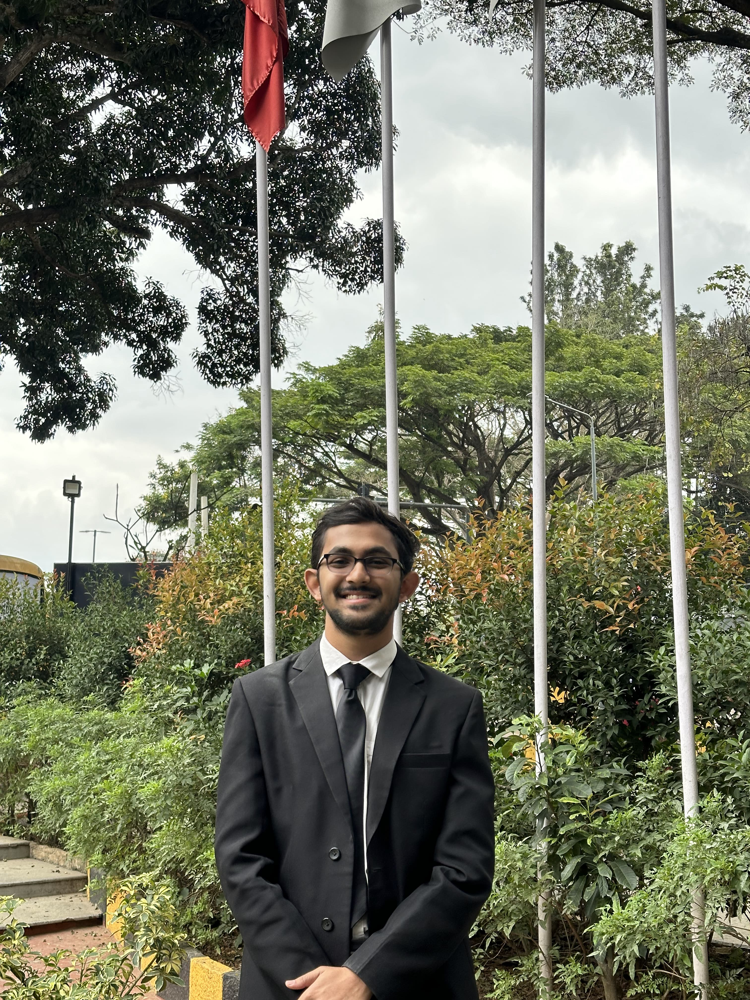

Shashank Chawathe
IV Year BBA LL.B. Student, IFIM Law School | Aspiring Advocate | Criminal, Tax & Family Law Enthusiast
About Me
I am a dedicated Law student with a growing specialization in Criminal Law, Taxation, and Family Law.
My practical experience spans GST Compliance, Civil & Criminal litigation, and Legal Drafting, equipping me with a balanced
skill set that blends analytical reasoning, statutory interpretation, and effective legal communication.
I am committed to delivering well-researched, client-focused legal solutions and contributing meaningfully
to the legal profession.
Internships & Experience
- M. Neerav & Associates – Internship focused on GST and Customs law.
- Scales Law Firm – Drafted legal notices and conducted cyber/IP research.
- Adv. Ajinkya Udane, Bombay HC – Assisted in case strategy, drafting and trial preparation.
- Edge Law Partners – Researched & Drafted on IPC, CrPC, and Evidence Act.
- The Amikus Qriae – Researched on Benami Transactions Act, Hindu law, and Censorship.
Publications
- “Gender Inclusivity in Sports” – Jus Corpus Law Journal
- “Malicious Prosecution vs. False Imprisonment” – IJLRA
- “The Curious Case of Male Prostitution” – Jus Corpus
- “Juvenile Delinquency in India” – Legal Lore
Awards & Leadership
- Convenor – Centre for Legal Advocacy, IFIM Law School
- Best Researcher – IFIM Law School's Annual Ranking Moot Court Competition
- Runner-up Speaker – IFIM Law School's Annual Ranking Moot Court Competition
- Runner-Up – IFIM Law School's Intra Crime Scene Investigation Competition
- Receipient of 50% Scholarship by Padode Foundation, IFIM Law School